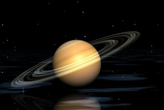

Saturno Saturno es el segundo planeta más grande del Sistema Solar y el único con anillos visibles desde la Tierra. Se ve claramente achatado por los polos a causa de la rápida rotación.
La atmósfera es de hidrógeno, con un poco de helio y metano. Es el único planeta que tiene una densidad menor que el agua. Si encontrásemos un océano suficientemente grande, Saturno flotaría.
El color amarillento de las nubes tiene bandas de otros colores, como Júpiter, pero no tan marcadas. Cerca del ecuador de Saturno el viento sopla a 500 Km/h.
Los anillos le dan un aspecto muy bonito. Tiene dos brillantes, A y B, y uno más suave, el C. Entre ellos hay aberturas. La mayor es la División de Cassini.
Cada anillo principal está formado por muchos anillos estrechos. Su composición es dudosa, pero sabemos que contienen agua. Podrían ser icebergs o bolas de nieve, mezcladas con polvo.
En 1850, el astrónomo Edouard Roche estudiaba el efecto de la gravedad de los planetas sobre sus satélites, y calculó que, cualquier materia situada a menos de 2,44 veces el radio del planeta, no se podría aglutinar para formar un cuerpo, y, si ya era un cuerpo, se rompería.
El anillo interior de Saturno, C, está a 1,28 veces el radio, y el exterior, el A, a 2,27. Los dos están dentro del límite de Roche, pero su origen todavía no se ha determinado. Con la materia que contienen se podría formar una esfera de un tamaño parecido al de la Luna.
El origen de los anillos de Saturno no se conoce con exactitud. Podrían haberse formado a partir de satélites que sufrieron impactos de cometas y meteoroides. Cuatrocientos años después de su descubrimiento, los impresionantes anillos de Saturno siguen siendo un misterio.
La elaborada estructura de los anillos se debe a la fuerza de gravedad de los satélites cercanos, en combinación con la fuerza centrífuga que genera la propia rotación de Saturno.
Las partículas que forman los anillos de Saturno tienen tamaños que van desde la medida microscópica hasta trozos como una casa. Con el tiempo, van recogiendo restos de cometas y asteroides. Si fuesen muy viejos, estarían oscuros por la acumulación de polvo. El hecho que sean brillantes indica que son jóvenes
| Radio: | 58.232 km |
| Masa: | 568,3E24 kg (95,16 Masa terrestre) |
| Superficie: | 42.700.000.000 km² |
| Duración del día: | 0d 10h 39m |
| Lunas: | Titán, Encélado, Dione, Mimas, Rea, Tetis, Jápeto, Hiperión, Más |